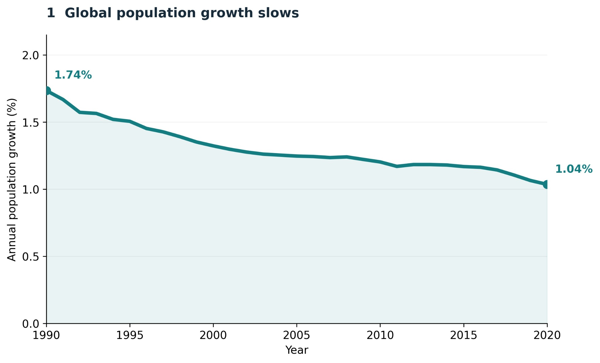
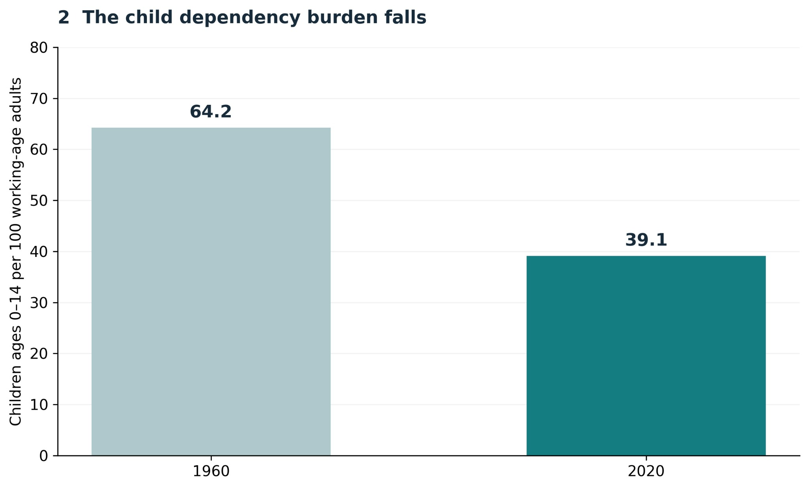
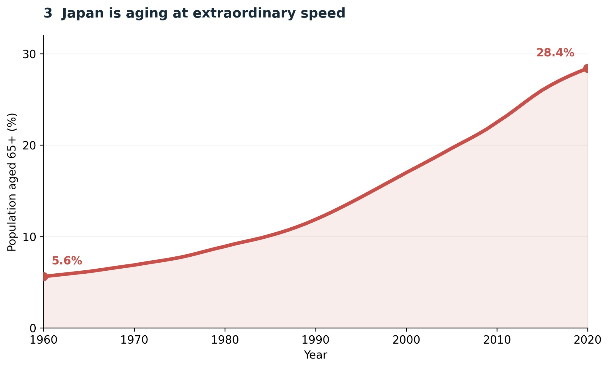
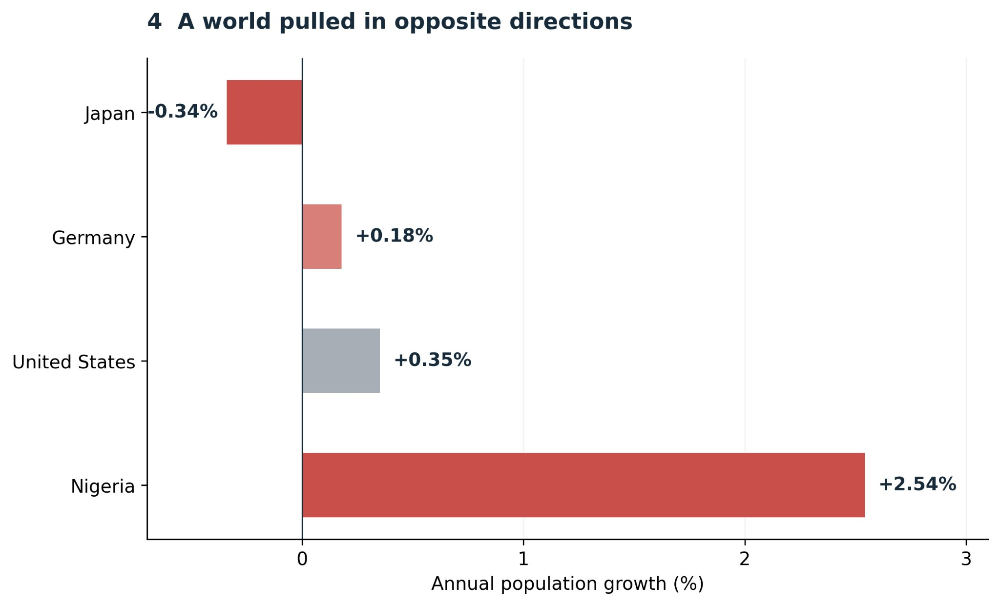

Proposition: Global demographic change is a sign of progress rather than crisis.
How can the same demographic dataset support two opposing interpretations? The following visualizations present the progress argument and the crisis argument using selected indicators from the World Bank Data by Indicators dataset (health.csv). The numerical observations are retained, while the choices of time period, geography, comparison, labels, and color shape the story a reader takes away.
FOR the Proposition: Slower Growth, Fewer Dependent Children


Design Decisions and Rationale
- Time-window selection: The first chart focuses on 1990–2020, a period with a downward trajectory. This helps make lower growth look like a consistent sign of progress, without displaying earlier decades or explaining the many possible reasons for the change.
- Global aggregation: A single worldwide trend provides a clean, readable summary. It also obscures differences among countries, where demographic change may create very different opportunities and challenges.
- Selective endpoints and metric: The second chart contrasts 1960 with 2020 instead of showing the intervening years. Choosing young-age dependency rather than total dependency excludes older dependents, making the change appear more uniformly beneficial.
- Visual framing: Calm teal colors, a smooth line, a simple two-bar comparison, and titles such as “slows” and “falls” encourage a positive reading. The labeled endpoints and zero-based bar axis aid legibility even while the selection of evidence favors the proposition.
AGAINST the Proposition: Aging and Diverging Growth Rates


Design Decisions and Rationale
- Extreme-case selection: Japan illustrates pronounced aging, but focusing on one unusually old population can imply that its circumstances represent a wider global crisis. This is a geographical selection effect rather than a change to the underlying values.
- Comparison by chosen countries: The 2020 bar chart selects Japan, Germany, the United States, and Nigeria. The contrast between negative and high positive growth makes divergence visually striking, but four countries cannot describe the entire world's distribution.
- Color and emphasis: Warm red tones and the large upward trajectory make aging appear urgent. The red bars for contrasting country rates direct attention to extremes, while a restrained axis and numerical labels keep the figures interpretable.
- Missing context: This view does not show an all-country distribution or the world aggregate. It also does not establish that aging, low growth, or high growth automatically causes a crisis; those conclusions would require additional social and economic evidence.
Final Reflection
I lean toward the progress perspective because the global indicators show meaningful long-term changes, including slower population growth and fewer children relative to the working-age population. However, neither chart proves that all countries benefit or that lower growth is always desirable. The opposing view raises real questions about aging and uneven demographic change, but its focus on Japan and a small set of countries gives exceptional cases more weight than they would receive in a comprehensive global comparison.
Both sides use genuine observations from the same dataset. The misleading potential comes mainly from selection and framing, not fabricated data or distorted scales. For the progress view, I limited the time window, emphasized a worldwide aggregate, and selected young-age rather than total dependency. For the crisis view, I highlighted an extreme country and deliberately selected four contrasting growth rates. These decisions guide readers toward different conclusions before they have considered what is missing.
This exercise showed me that an accurate chart can still give an incomplete impression. Color, wording, geography, time ranges, and which measure gets plotted all carry an argument. A more balanced presentation would include trends over comparable periods, a larger range of countries, both young- and old-age dependency, and an explanation of what demographic indicators do and do not tell us about well-being. Ethical visualization requires making these limitations understandable, especially when a persuasive visual could be mistaken for a complete picture.
Data Source
World Bank Data by Indicators, health.csv. Indicators used: population growth (annual %), population aged 65 and above (% of total), and young-age dependency ratio. Values and selected periods are from the checkpoint visualizations; the interpretations and comparisons reflect the deliberate design choices described above.